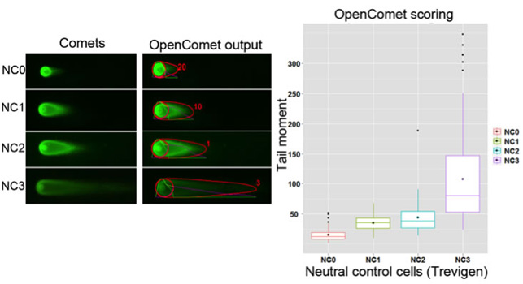

OpenComet validation
To test the performance of OpenComet, we conducted several experiments on comet assay images. In our experimental setup, L6 cells were treated with 50 microM H2O2 for 1 hour, causing DNA damage. Cells were then allowed to repair this damage over 24 hours of recovery time. Under this mild level of oxidative stress, we see a gradual repair process over the recovery time. Control cells indicate no treatment with H2O2. We analysed 10 randomly chosen images (one from each gel) with OpenComet. OpenComet precisely captures the decreasing trend of DNA damage over time as shown in the figures below.
We validated OpenComet on neutral comet assay images, which present different characteristics from alkaline comet assay images. The neutral assay performed on Trevigen neutral comet assay control cells with different levels of DNA damage. The increasing trend in damage is accurately measured by OpenComet.
